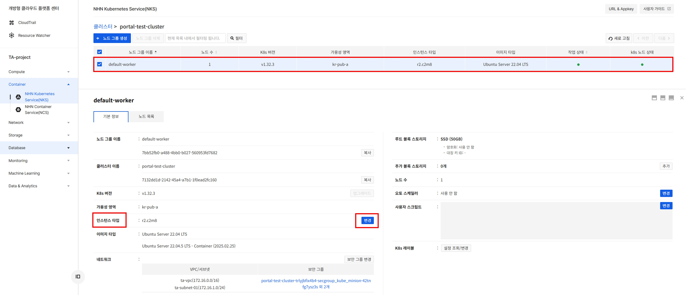
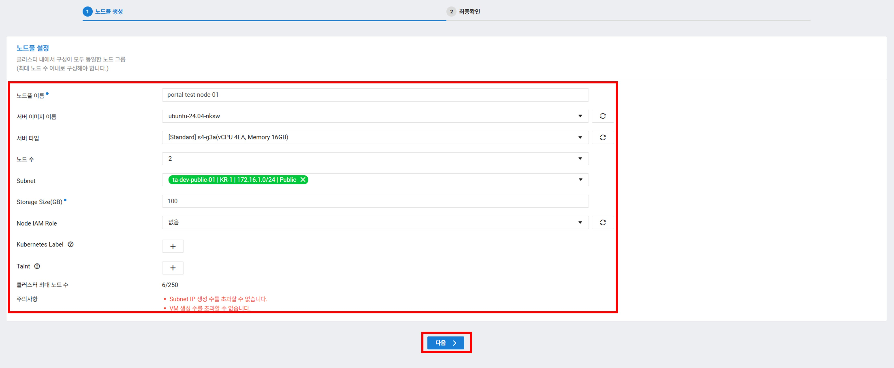
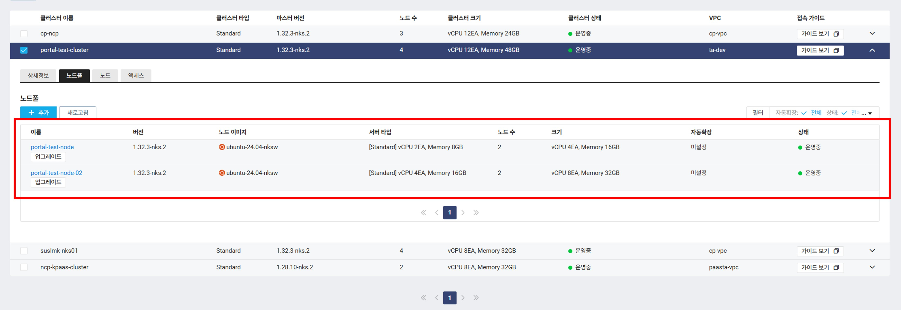
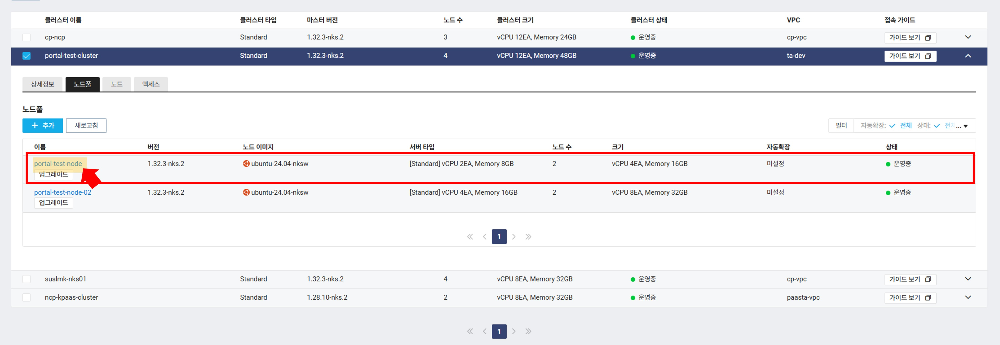
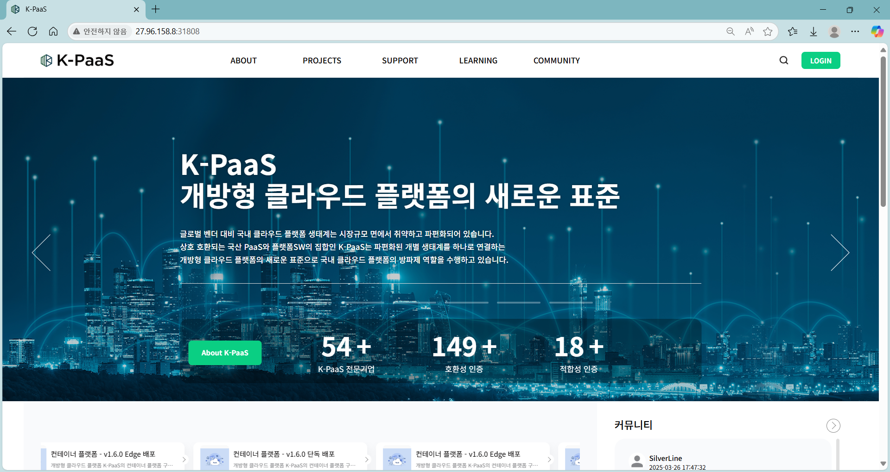
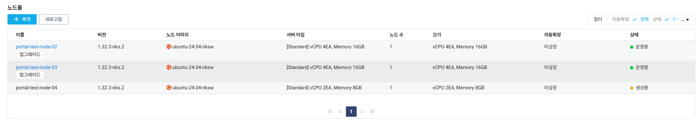

정보
2.1. Prerequisite
2.2. 배포 목록
2.3. 자원 확인
scale out
3.1. NHN cluster scale out
3.1.1 정상 작동 확인
3.2. NCP cluster node scale out
3.2.1 nodepool scale out (방법 1)
3.2.2 nodepool scale out (방법 2)
scale in
4.1. NHN cluster scale in
4.1.1 정상 작동 확인
4.2. NCP cluster node scale in
4.2.1 nodepool scale in
4.2.2 정상 작동 확인
본 문서(대표 포털 멀티 클러스터 scale out 가이드)에서는 현재 대표 포털이 배포되어진 멀티 클러스터와 동일한 상태의 클러스터를 생성하여 scale out/in하는 테스트 과정과 방법을 기술하였다.
CSP 쿠버네티스 서비스 클러스터를 대상으로 Istio를 이용하여 멀티 클러스터를 구성하였다.
본 문서에서는 nhn cloud와 naver cloud 환경에서 scale out/in 테스트 과정과 방법을 기술하였다.
현재 대표 포털이 배포되어있는 멀티 클러스터와 비슷한 환경을 재현하기 위해 샘플앱 배포하여 자원 많이 쓰는 상태에서 진행한다.
db는 구축하지 않고 개발 서버용을 사용함
#ncp-cluster
ncloud@ncp-kpaas-nodepools-w-2hna:~$ kubectl config use-context ncp-kpaas-cluster
Switched to context "ncp-kpaas-cluster".
ncloud@ncp-kpaas-nodepools-w-2hna:~$ kubectl top node
NAME CPU(cores) CPU% MEMORY(bytes) MEMORY%
ncp-kpaas-nodepools-w-2hna 193m 4% 9019Mi 67%
ncp-kpaas-nodepools-w-2hnb 352m 8% 9602Mi 72%
#nhn-cluster
ncloud@ncp-kpaas-nodepools-w-2hna:~$ kubectl config use-context nhn-kpaas-cluster
Switched to context "nhn-kpaas-cluster".
ncloud@ncp-kpaas-nodepools-w-2hna:~$ kubectl top node
NAME CPU(cores) CPU% MEMORY(bytes) MEMORY%
nhn-kpaas-cluster-default-worker-node-0 1173m 29% 10609Mi 66%
kps-api-business
kps-api-opperate
kps-api-common
kps-api-support
kps-api-edu
kps-api-content
kps-web-user
kps-web-admin
kps-zuul-gateway
$ kubectl get pod -n kps2 --context=ncloud
NAME READY STATUS RESTARTS AGE
kps-api-common-7777f79d7f-2l4g9 2/2 Running 0 5h7m
kps-api-common-7777f79d7f-mhrvp 2/2 Running 0 5h7m
kps-api-content-6f84fd6b5b-2ff7g 2/2 Running 0 5h7m
kps-api-content-6f84fd6b5b-mpxtr 2/2 Running 0 5h7m
kps-api-operate-79c4f89d9b-hktns 2/2 Running 0 5h7m
kps-api-operate-79c4f89d9b-jpqpz 2/2 Running 0 5h7m
kps-api-support-868d474448-9lj5x 2/2 Running 0 5h7m
kps-api-support-868d474448-crq5w 2/2 Running 0 5h7m
kps-redis-6cb7c546dd-gtp7s 2/2 Running 0 4h28m
kps-web-user-65b9467754-2dbmr 2/2 Running 0 3h5m
kps-web-user-65b9467754-chlq2 2/2 Running 0 3h5m
kps-web-user-65b9467754-t7qx6 2/2 Running 0 3h5m
kps-zuul-gateway-fd576cdcb-qb8xv 2/2 Running 0 5h6m
$ kubectl get pod -n kps2 --context=nhn
NAME READY STATUS RESTARTS AGE
kps-api-business-9cb48dcb8-5vbsk 2/2 Running 4 (13m ago) 21h
kps-api-business-9cb48dcb8-bxhfk 2/2 Running 4 (13m ago) 21h
kps-api-edu-6569df6b6f-5h72n 2/2 Running 4 (13m ago) 21h
kps-api-edu-6569df6b6f-9d5rk 2/2 Running 4 (13m ago) 21h
kps-web-admin-556944d44b-5pkt9 1/1 Running 3 (11m ago) 46h
kps-web-admin-556944d44b-7fpdq 1/1 Running 2 (13m ago) 46h
kps-web-admin-556944d44b-kzv2q 1/1 Running 2 (13m ago) 46h
정상 접속 확인
$ kubectl top node --context=ncloud
NAME CPU(cores) CPU% MEMORY(bytes) MEMORY%
portal-test-node-w-3f6k 467m 24% 5371Mi 88%
portal-test-node-w-3f6l 435m 22% 4446Mi 73%
$ kubectl top node --context=nhn
NAME CPU(cores) CPU% MEMORY(bytes) MEMORY%
portal-test-cluster-default-worker-node-0 588m 29% 5278Mi 66%
nhn cluster node spec 변경 가능
Cluster > NHN Kubernetes Service(NKS) 접속한다.



노드 스펙변경시작부터 파드가 완전히 올라오는 것까지 약 7~10분 소요 nhncloud 운영 클러스터의 경우 노드가 1개로 구성되어있어 순단 발생 가능성 있음


naver cloud 환경에서 기존에 사용하던 노드(IP)변경없이 scale out은 불가능함을 확인
따라서 변경할 스펙으로 노드풀을 추가한다음 기존에 사용중인 노드풀을 삭제해도 멀티 클러스터가 정상적으로 작동하는지를 확인하는 절차를 진행한다.
NCloud Kubernetes Service(NKS) > Cluster 접속한다.




# 아래명령어로도 확인 가능
$ kubectl get node --context=ncloud
NAME STATUS ROLES AGE VERSION
portal-test-node-02-w-7090 Ready <none> 10m v1.32.3
portal-test-node-02-w-8059 Ready <none> 10m v1.32.3
portal-test-node-w-3f6k Ready <none> 3d5h v1.32.3
portal-test-node-w-3f6l Ready <none> 3d5h v1.32.3


테스트 환경의 경우 [외부IP]:[노드포트] 형식으로 접근 가능
새로 생성된 서버에 접속하여 CSP 쿠버네티스 서비스 Istio 멀티 클러스터 구성 가이드(NAVER-NHN)의 3번부터 4.1까지 실행
도메인 변경까지 새로 생성된 서버의 IP로 변경 필요
변경된 공인ip값으로 정상 접속 확인

현재 대표포털이 운영되고 있어 해당 방법은 부적절할수 있음(순단이 오래 지속됨(약 40분))
노드풀을 생성한 다음 기존 노드풀 모두를 삭제하지 말고 도메인이 연결된 공인ip가 붙은 서버만 제외하고 삭제하는 방법
노드풀 추가는 nodepool scale out (방법 1)을 참고하여 생성하되 노드수를 1개로 선택한다.


$ kubectl get node --context=ncloud
NAME STATUS ROLES AGE VERSION
portal-test-node-02-w-7090 Ready <none> 81m v1.32.3
portal-test-node-03-w-7104 Ready <none> 22m v1.32.3
방법2 실행시 테스트 클러스터에서는 순단 발생하지 않음
정상 접속 확인

scale in 하는 과정은 2. scale out과 과정은 동일하여 자세한 방법은 2.scale out을 참조한다.


